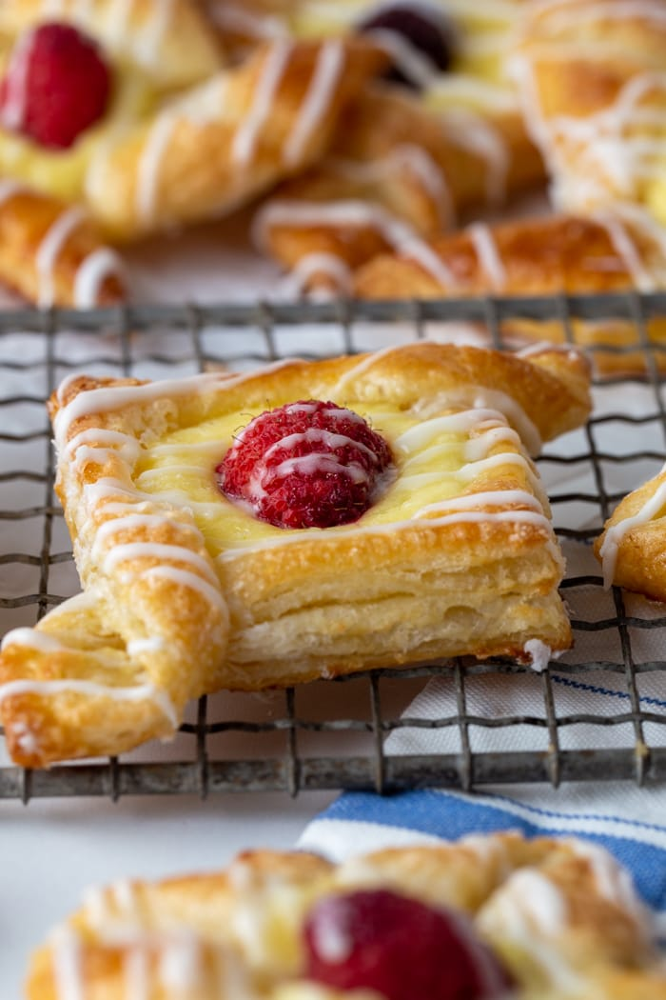

Home
About Us
Our Pastries
Enquiry
Contact Us
Home
About Us
Our Pastries
Enquiry
Contact Us
Welcome to Warm Oven Studio
Baked fresh with every sunrise.

Stepping into Warm Oven Studio means experiencing the comfort of slow, intentional baking. From delicate, golden-layered croissants to rich, signature tarts, every pastry is handcrafted daily using honest ingredients and traditional techniques. Whether you are grabbing your morning espresso, ordering custom treats for a celebration or stopping in for a quiet moment, we have a seat—and a fresh bake—waiting for you.